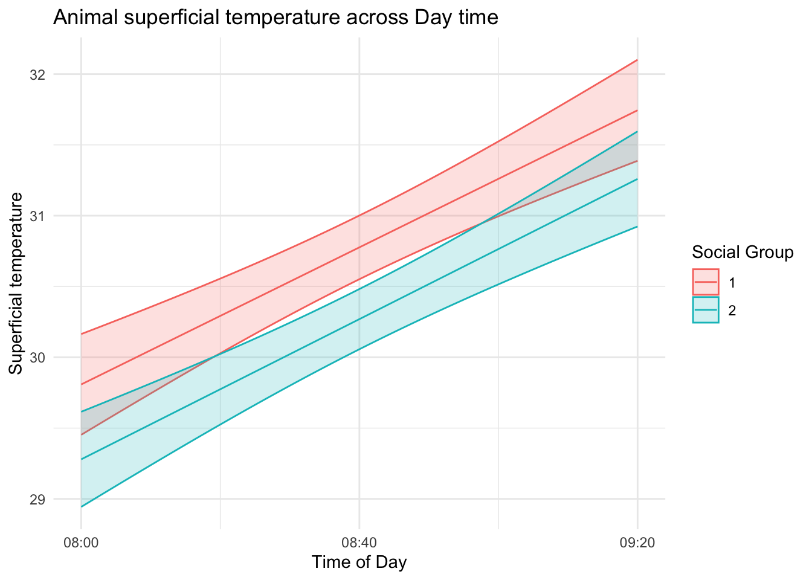

9 GLM Analysis: A Practical Application
9.1 Overview
This final section focuses on the practical application of statistical modeling techniques using data from the 2019 study by Pilatti et al. The study investigated diurnal behaviors, thermoregulatory variables, and lameness scores of dairy cows in a compost-bedded pack barn system under hot and humid conditions Pilatti et al. (2019).
9.1.1 Data Overview
The dataset, including diurnal behaviors, thermoregulatory variables, and lameness scores, is accessible for practical application of generalized linear models (GLM). This enables an analysis of the impact of social groups on these three variables.
9.1.2 GitHub Repository
Access the dataset on our GitHub repository: GitHub Repository.
In the following sections, we guide you through applying GLM techniques to analyze the influence of different factors on diurnal behaviors, thermoregulatory variables, and lameness scores.
9.2 Analysis
9.2.1 Install and Load Libraries
To start the analysis, we need to install and load the necessary R libraries. Execute the following commands to ensure you have the required tools at your disposal:
9.2.2 Import amd manipulate datasets
Now, let’s import the dataset into R for exploration and analysis. The dataset is available on our GitHub repository. Use the following code to import the data:
# Load the dataset from Excel
excel_path <- "data/Dados_Pillati_2018.xlsx"
df_bh <- read_excel(excel_path, sheet = "COMPORTAMENTO")
df_term <- read_excel(excel_path, sheet = "TERMORREG")
df_lam <- read_excel(excel_path, sheet = "BEA")
#Transform cathegorical variables to factors
df_bh <- df_bh |>
mutate_at(vars(DIA, TRAT, ANIMAL), as.factor)
df_term <- df_term |>
mutate_at(vars(DIA, TRAT, ANIMAL), as.factor)
df_lam <- df_lam |>
mutate_at(vars(DIA, TRAT, ANIMAL), as.factor) |>
mutate_at(vars(HIG, CLAUD), ~factor(., levels = c("0","1","2","3","4")))9.2.3 Animal Behaviors Analysis
9.2.3.1 Dataset Overview
# Display a summary of the diurnal behaviors dataset
skimr::skim(df_bh)| Name | df_bh |
| Number of rows | 4032 |
| Number of columns | 20 |
| _______________________ | |
| Column type frequency: | |
| factor | 3 |
| numeric | 17 |
| ________________________ | |
| Group variables | None |
Variable type: factor
| skim_variable | n_missing | complete_rate | ordered | n_unique | top_counts |
|---|---|---|---|---|---|
| DIA | 0 | 1 | FALSE | 24 | 1: 168, 2: 168, 3: 168, 4: 168 |
| TRAT | 0 | 1 | FALSE | 2 | 1: 2016, 2: 2016 |
| ANIMAL | 0 | 1 | FALSE | 12 | 1: 336, 2: 336, 3: 336, 4: 336 |
Variable type: numeric
| skim_variable | n_missing | complete_rate | mean | sd | p0 | p25 | p50 | p75 | p100 | hist |
|---|---|---|---|---|---|---|---|---|---|---|
| HORA | 0 | 1.00 | 7.50 | 4.03 | 1 | 4 | 7.5 | 11 | 14 | ▇▇▅▇▇ |
| OP | 230 | 0.94 | 0.40 | 0.49 | 0 | 0 | 0.0 | 1 | 1 | ▇▁▁▁▆ |
| OD | 225 | 0.94 | 0.30 | 0.49 | 0 | 0 | 0.0 | 1 | 11 | ▇▁▁▁▁ |
| RP | 224 | 0.94 | 0.20 | 0.40 | 0 | 0 | 0.0 | 0 | 1 | ▇▁▁▁▂ |
| RD | 227 | 0.94 | 0.22 | 0.41 | 0 | 0 | 0.0 | 0 | 1 | ▇▁▁▁▂ |
| C | 231 | 0.94 | 0.33 | 0.47 | 0 | 0 | 0.0 | 1 | 1 | ▇▁▁▁▃ |
| IA | 225 | 0.94 | 0.09 | 0.28 | 0 | 0 | 0.0 | 0 | 1 | ▇▁▁▁▁ |
| AN | 225 | 0.94 | 0.17 | 0.37 | 0 | 0 | 0.0 | 0 | 1 | ▇▁▁▁▂ |
| OF | 225 | 0.94 | 0.01 | 0.11 | 0 | 0 | 0.0 | 0 | 1 | ▇▁▁▁▁ |
| LA | 224 | 0.94 | 0.12 | 0.33 | 0 | 0 | 0.0 | 0 | 1 | ▇▁▁▁▁ |
| CO | 224 | 0.94 | 0.08 | 0.27 | 0 | 0 | 0.0 | 0 | 1 | ▇▁▁▁▁ |
| AF | 224 | 0.94 | 0.03 | 0.16 | 0 | 0 | 0.0 | 0 | 1 | ▇▁▁▁▁ |
| EM | 224 | 0.94 | 0.02 | 0.12 | 0 | 0 | 0.0 | 0 | 1 | ▇▁▁▁▁ |
| CA | 224 | 0.94 | 0.03 | 0.17 | 0 | 0 | 0.0 | 0 | 1 | ▇▁▁▁▁ |
| L | 224 | 0.94 | 0.02 | 0.14 | 0 | 0 | 0.0 | 0 | 1 | ▇▁▁▁▁ |
| M | 225 | 0.94 | 0.00 | 0.07 | 0 | 0 | 0.0 | 0 | 1 | ▇▁▁▁▁ |
| BC | 224 | 0.94 | 0.03 | 0.16 | 0 | 0 | 0.0 | 0 | 1 | ▇▁▁▁▁ |
Brief Description od data: The behaviors dataset provides an overview of the observed behaviors, allowing us to understand the patterns and trends in the daily activities of dairy cows, categorized into two social groups: primiparous and multiparous, within a compost barn setting.
Model definition
We opt for a binomial Generalized Linear Model (GLM) with a logit linking function to model behavior. This choice is suitable because our response variable involves the occurrence or non-occurrence of a certain behavior at a given moment in time, resulting in a dichotomous outcome—either the behavior is present or absent.
Alternatively, if our focus were on quantifying the number of times a particular behavior occurs within a specified time frame, a Poisson GLM with a log link function would be more appropriate. This model is well-suited for count data, where the response variable represents the number of events (occurrences of behavior in this context) and follows a Poisson distribution.
As we measure behavior throughout daylight hours for both social groups—primiparous and multiparous cows—our primary interest lies in comparing these groups along the course of the day. The binomial GLM with a logit link will help us assess the probability of behavior occurrence at different times, shedding light on potential variations in behavior patterns between the two social groups during daylight hours. Certainly! Here’s a continuation, starting with the mathematical description of the binomial GLM model:
Thus, our model is expressed mathematically as follows:
\[\text{log}\left(\frac{p}{1-p}\right) = \beta_0 + \beta_1 \text{HORA} + \beta_2 \text{TRAT} + \beta_3 \text{HORA} \times \text{TRAT}\]
where:
\(p\) is the probability of behavior occurrence,
\(\text{HORA}\) represents the time of day,
\(\text{TRAT}\) denotes the treatment or social group (primiparous and multiparous), and
\(\beta_0\), \(\beta_1\), \(\beta_2\), \(\beta_3\)) are the model coefficients.
In R, this model can be fitted using the glm function:
The variable OP denotes the binary outcome, indicating the occurrence (1) or non-occurrence (0) of the behavior under consideration. Meanwhile, HORA, TRAT, and DIA serve as predictor variables, with DIA specifically treated as a control variable.
The glm function in R maximizes the likelihood of the observed data under the specified binomial distribution with a logit link, providing estimates for the model coefficients.
summary(mod_op)
Call:
glm(formula = OP ~ HORA * TRAT, family = binomial(link = "logit"),
data = df_bh)
Coefficients:
Estimate Std. Error z value Pr(>|z|)
(Intercept) -0.57683 0.10320 -5.589 2.28e-08 ***
HORA 0.01592 0.01205 1.321 0.18639
TRAT2 0.42108 0.14031 3.001 0.00269 **
HORA:TRAT2 -0.04132 0.01648 -2.507 0.01219 *
---
Signif. codes: 0 '***' 0.001 '**' 0.01 '*' 0.05 '.' 0.1 ' ' 1
(Dispersion parameter for binomial family taken to be 1)
Null deviance: 5123.4 on 3801 degrees of freedom
Residual deviance: 5113.7 on 3798 degrees of freedom
(230 observations deleted due to missingness)
AIC: 5121.7
Number of Fisher Scoring iterations: 4Similar to linear models, the assessment of predictor effects in Generalized Linear Models (GLMs) can be conducted through an analysis of deviance table and chi-square tests. This can be achieved using the Anova function from the car package. The following code exemplifies the procedure:
Warning: package 'car' was built under R version 4.3.2Carregando pacotes exigidos: carDataWarning: package 'carData' was built under R version 4.3.2
Attaching package: 'car'The following object is masked from 'package:dplyr':
recodeThe following object is masked from 'package:purrr':
some# Perform analysis of deviance table and chi-square test
Anova(mod_op, type = "II")Analysis of Deviance Table (Type II tests)
Response: OP
LR Chisq Df Pr(>Chisq)
HORA 0.5659 1 0.45190
TRAT 2.8337 1 0.09231 .
HORA:TRAT 6.2930 1 0.01212 *
---
Signif. codes: 0 '***' 0.001 '**' 0.01 '*' 0.05 '.' 0.1 ' ' 1This approach facilitates the examination of the significance of individual predictors in the model. The type = "II" argument specifies the use of Type II sums of squares in the analysis. Further details on the method and interpretation can be found Dobson and Barnett (2008) and in the documentation for the car package (Fox and Weisberg (2020)).
The examination of the table reveals a notable interaction between the variables HORA and TRAT. Subsequently, we aim to objectively visualize predictions, along with prediction intervals, to assess the behavior probabilities of both social groups across varying time points:
library(ggplot2)
# Create a data frame for prediction
pred_data <- expand.grid(
TRAT = unique(df_bh$TRAT),
HORA = seq(min(df_bh$HORA), max(df_bh$HORA), length.out = 100))
# Make predictions
pred_probs <- predict(mod_op, newdata = pred_data, type = "response", se.fit = TRUE)
# Combine predictions and intervals with prediction data
pred_data <- cbind(pred_data, as.data.frame(pred_probs))
# Plot using ggplot2
ggplot(pred_data, aes(x = HORA, y = fit, color = TRAT, fill = TRAT)) +
geom_line() +
geom_ribbon(aes(ymin = fit - 1.96 * se.fit, ymax = fit + 1.96 * se.fit, fill = TRAT), alpha = 0.2) +
labs(title = "Probability of 'OP' Behavior across Day time",
x = "Time of Day",
y = "Probability of Behavior") +
scale_x_continuous(breaks = seq(1,14,1), labels = c("08:00", "08:40", "09:20", "10:00", "10:40", "11:20", "12:00", "12:40", "13:20", "14:00", "14:40", "15:20", "16:00", "16:40")) +
scale_color_discrete(name = "Social Group") +
scale_fill_discrete(name = "Social Group") +
theme_minimal()However, should the consideration of the DIA variable be omitted? Let’s investigate.
We can extend the model by incorporating DIA as a random effect using a mixed-effects model. To achieve this, we’ll utilize the glmer function from the lme4 package:
Carregando pacotes exigidos: MatrixWarning: package 'Matrix' was built under R version 4.3.2
Attaching package: 'Matrix'The following objects are masked from 'package:tidyr':
expand, pack, unpack# Fit the mixed-effects model with DAY as a random effect
mod_op_mixed <- glmer(OP ~ HORA * TRAT + (1 | DIA),
family = binomial(link = "logit"),
data = df_bh)
# Print model summary
summary(mod_op_mixed)Generalized linear mixed model fit by maximum likelihood (Laplace
Approximation) [glmerMod]
Family: binomial ( logit )
Formula: OP ~ HORA * TRAT + (1 | DIA)
Data: df_bh
AIC BIC logLik deviance df.resid
5085.4 5116.6 -2537.7 5075.4 3797
Scaled residuals:
Min 1Q Median 3Q Max
-1.3469 -0.8167 -0.7139 1.1604 1.6226
Random effects:
Groups Name Variance Std.Dev.
DIA (Intercept) 0.07969 0.2823
Number of obs: 3802, groups: DIA, 24
Fixed effects:
Estimate Std. Error z value Pr(>|z|)
(Intercept) -0.58801 0.11908 -4.938 7.89e-07 ***
HORA 0.01622 0.01216 1.334 0.18225
TRAT2 0.43087 0.14165 3.042 0.00235 **
HORA:TRAT2 -0.04215 0.01664 -2.533 0.01130 *
---
Signif. codes: 0 '***' 0.001 '**' 0.01 '*' 0.05 '.' 0.1 ' ' 1
Correlation of Fixed Effects:
(Intr) HORA TRAT2
HORA -0.772
TRAT2 -0.644 0.649
HORA:TRAT2 0.564 -0.731 -0.881In this model, (1 | DIA) specifies that DIA is a random effect. The (1 | DIA) term assumes a random intercept for each level of DAY.
Let’s perform a model comparison using the Akaike Information Criterion (AIC), a widely used metric for model selection (Burnham and Anderson (2002)):
# Compare models using AIC
AIC_comparison <- AIC(mod_op, mod_op_mixed)Choosing a model based on the Akaike Information Criterion (AIC) involves selecting the model with the lowest AIC value among a set of candidate models. AIC is a measure of relative model fit that balances the goodness-of-fit with the complexity of the model (Burnham and Anderson (2004)).
It seems that the model, including DIA as a random term, is more plausible. However, analytical computation of standard errors and intervals for mixed-effects models is not straightforward. To address this, we need to employ numerical approximation methods, often through resampling techniques. However, this course does not emphasize these advanced techniques. Instead, we will acknowledge that daily variation is a natural fluctuation inherent in the experiment, leading to larger prediction intervals.
9.2.4 Thermoregulatory Variables Analysis
9.2.4.1 Dataset Overview:
# Display a summary of the thermoregulatory variables dataset
skimr::skim(df_term)| Name | df_term |
| Number of rows | 864 |
| Number of columns | 12 |
| _______________________ | |
| Column type frequency: | |
| factor | 3 |
| numeric | 9 |
| ________________________ | |
| Group variables | None |
Variable type: factor
| skim_variable | n_missing | complete_rate | ordered | n_unique | top_counts |
|---|---|---|---|---|---|
| DIA | 0 | 1 | FALSE | 24 | 1: 36, 2: 36, 3: 36, 4: 36 |
| TRAT | 0 | 1 | FALSE | 2 | 1: 433, 2: 431 |
| ANIMAL | 0 | 1 | FALSE | 12 | 1: 72, 2: 72, 3: 72, 4: 72 |
Variable type: numeric
| skim_variable | n_missing | complete_rate | mean | sd | p0 | p25 | p50 | p75 | p100 | hist |
|---|---|---|---|---|---|---|---|---|---|---|
| HORA | 0 | 1.00 | 2.00 | 0.82 | 1.00 | 1.00 | 2.00 | 3.00 | 3.00 | ▇▁▇▁▇ |
| TF | 48 | 0.94 | 28.48 | 3.28 | 15.20 | 26.60 | 28.60 | 31.00 | 35.60 | ▁▁▅▇▃ |
| TP | 48 | 0.94 | 31.30 | 2.23 | 21.20 | 30.00 | 31.60 | 33.00 | 35.60 | ▁▁▃▇▅ |
| TC | 48 | 0.94 | 31.35 | 2.30 | 22.00 | 29.95 | 31.60 | 33.00 | 36.60 | ▁▁▅▇▂ |
| TFL | 48 | 0.94 | 31.47 | 2.56 | 3.60 | 30.00 | 32.00 | 33.20 | 39.60 | ▁▁▁▇▅ |
| TCX | 48 | 0.94 | 29.98 | 2.64 | 20.00 | 28.40 | 30.20 | 32.00 | 35.80 | ▁▂▆▇▂ |
| TMS | 48 | 0.94 | 30.51 | 2.40 | 21.88 | 29.04 | 30.82 | 32.32 | 35.32 | ▁▂▅▇▃ |
| FR15 | 48 | 0.94 | 13.94 | 5.30 | 4.00 | 10.00 | 13.00 | 18.00 | 33.00 | ▅▇▅▂▁ |
| FR | 49 | 0.94 | 55.74 | 21.22 | 16.00 | 40.00 | 52.00 | 72.00 | 132.00 | ▅▇▅▂▁ |
Brief Description: The thermoregulatory variables dataset encompasses information on various physiological measures, providing insights into how two distinct social groups of dairy cows regulate their body temperature within a compost barn setting.
Here, we will work with two variables, one being continuous (superficial temperature) and the other discrete (respiratory rate). Since temperature is continuous, it is expected to have a normal distribution, while respiratory rate, being obtained by counting, is expected to have a Poisson distribution.
Model definition for temperature
We could initially employ the classical linear model for superficial temperature, incorporating Gaussian errors and applying the least squares method. Nevertheless, for the sake of consistency, we will adopt its equivalent Generalized Linear Model (GLM) in the following manner:
\[Y_{ij} = \beta_0 + \beta_1 \text{HORA} + \beta_2 \text{TRAT} + \beta_3 \text{HORA} \times \text{TRAT} + \epsilon_{ij}\]
where:
\(Y_ijk\) is the temperature of \(i\)-th animal of \(j\)-th social group measured at \(k\)-th day time,
\(\text{HORA}\) represents the time of day,
\(\text{TRAT}\) denotes the treatment or social group (primiparous and multiparous),
(\(\beta_0\), \(\beta_1\), \(\beta_2\) and \(\beta_3\)) are the model coefficients, and
\(\epsilon_ij\) is the normal distributed error term.
In R, this model can be fitted using the glm function:
To view the model coefficients:
summary(mod_temp)
Call:
glm(formula = TMS ~ HORA * TRAT, family = gaussian(link = "identity"),
data = df_term)
Coefficients:
Estimate Std. Error t value Pr(>|t|)
(Intercept) 28.83994 0.30415 94.822 < 2e-16 ***
HORA 0.96822 0.14102 6.866 1.31e-11 ***
TRAT2 -0.55089 0.41797 -1.318 0.188
HORA:TRAT2 0.02199 0.19363 0.114 0.910
---
Signif. codes: 0 '***' 0.001 '**' 0.01 '*' 0.05 '.' 0.1 ' ' 1
(Dispersion parameter for gaussian family taken to be 5.070756)
Null deviance: 4690.6 on 815 degrees of freedom
Residual deviance: 4117.5 on 812 degrees of freedom
(48 observations deleted due to missingness)
AIC: 3646.5
Number of Fisher Scoring iterations: 2And applying type II Analysis of deviance:
car::Anova(mod_temp, type = "II")Analysis of Deviance Table (Type II tests)
Response: TMS
LR Chisq Df Pr(>Chisq)
HORA 102.819 1 < 2.2e-16 ***
TRAT 10.306 1 0.001326 **
HORA:TRAT 0.013 1 0.909592
---
Signif. codes: 0 '***' 0.001 '**' 0.01 '*' 0.05 '.' 0.1 ' ' 1The Analysis of Deviance Table indicates that the variable HORA significantly influences the response variable TMS (p < 0.001), while TRAT and the interaction term HORA:TRAT do not show statistically significant effects (p > 0.05). This underscores the prominent role of “HORA” in explaining variability in TMS within the model.
Let´s see the results graphically:
# Create a data frame for prediction
pred_data <- expand.grid(
TRAT = unique(df_term$TRAT),
HORA = seq(min(df_term$HORA), max(df_term$HORA), length.out = 100))
# Make predictions
pred_probs_temp <- predict(mod_temp, newdata = pred_data, type = "response", se.fit = TRUE)
# Combine predictions and intervals with prediction data
pred_data_temp <- cbind(pred_data, as.data.frame(pred_probs_temp))
# Plot using ggplot2
ggplot(pred_data_temp, aes(x = HORA, y = fit, color = TRAT, fill = TRAT)) +
geom_line() +
geom_ribbon(aes(ymin = fit - 1.96 * se.fit, ymax = fit + 1.96 * se.fit, fill = TRAT), alpha = 0.2) +
labs(title = "Animal superficial temperature across Day time",
x = "Time of Day",
y = "Superficial temperature") +
scale_x_continuous(breaks = seq(1,3,1), labels = c("08:00", "08:40", "09:20")) +
scale_color_discrete(name = "Social Group") +
scale_fill_discrete(name = "Social Group") +
theme_minimal()
Model definition for respiratory frequency
To model the respiratory frequency (FR) using a Poisson distribution with a log link function, the relationship is expressed as follows:
\[\log(\lambda_{ijk}) = \beta_0 + \beta_1 \text{HORA} + \beta_2 \text{TRAT} + \beta_3 \text{HORA} \times \text{TRAT}\]
where:
\(\log(\lambda_{ijk})\) is the natural logarithm of the expected count of respiratory frequency for the \(i\)-th animal of the \(j\)-th social group measured at the \(k\)-th time of day,
\(\text{HORA}\) represents the time of day,
\(\text{TRAT}\) denotes the treatment or social group (primiparous and multiparous),
\(\beta_0, \beta_1, \beta_2,\) and \(\beta_3\) are the model coefficients.
In R, this model can be fitted using the glm function with a Poisson distribution and a log link:
To view the model coefficients:
summary(mod_fr)
Call:
glm(formula = FR ~ HORA * TRAT, family = poisson(link = "log"),
data = df_term)
Coefficients:
Estimate Std. Error z value Pr(>|z|)
(Intercept) 3.587264 0.019198 186.855 <2e-16 ***
HORA 0.224335 0.008374 26.789 <2e-16 ***
TRAT2 -0.012572 0.026635 -0.472 0.6369
HORA:TRAT2 -0.022632 0.011644 -1.944 0.0519 .
---
Signif. codes: 0 '***' 0.001 '**' 0.01 '*' 0.05 '.' 0.1 ' ' 1
(Dispersion parameter for poisson family taken to be 1)
Null deviance: 6401.5 on 814 degrees of freedom
Residual deviance: 5005.0 on 811 degrees of freedom
(49 observations deleted due to missingness)
AIC: 9731.2
Number of Fisher Scoring iterations: 4And applying Type II Analysis of Deviance:
car::Anova(mod_fr, type = "II")Analysis of Deviance Table (Type II tests)
Response: FR
LR Chisq Df Pr(>Chisq)
HORA 1350.75 1 < 2.2e-16 ***
TRAT 42.22 1 8.141e-11 ***
HORA:TRAT 3.78 1 0.05192 .
---
Signif. codes: 0 '***' 0.001 '**' 0.01 '*' 0.05 '.' 0.1 ' ' 1The Analysis of Deviance Table indicates that time of day significantly influences respiratory frequency. However, the social group TRAT2 alone does not show a significant effect on FR, and the interaction term HORA:TRAT2 exhibits borderline significance.
Subsequently, the graphical representation illustrates the predicted FR with confidence intervals across different times of the day and social groups.
# Create a data frame for prediction
pred_data_fr <- expand.grid(
TRAT = unique(df_term$TRAT),
HORA = seq(min(df_term$HORA), max(df_term$HORA), length.out = 100))
# Make predictions
pred_probs_fr <- predict(mod_fr, newdata = pred_data_fr, type = "response", se.fit = TRUE)
# Combine predictions and intervals with prediction data
pred_data_fr <- cbind(pred_data_fr, as.data.frame(pred_probs_fr))
# Plot using ggplot2
ggplot(pred_data_fr, aes(x = HORA, y = fit, color = TRAT, fill = TRAT)) +
geom_line() +
geom_ribbon(aes(ymin = fit - 1.96 * se.fit, ymax = fit + 1.96 * se.fit, fill = TRAT), alpha = 0.2) +
labs(title = "Animal respiratory frequency across Day time",
x = "Time of Day",
y = "Respiratory Frequency") +
scale_x_continuous(breaks = seq(1, 3, 1), labels = c("08:00", "08:40", "09:20")) +
scale_color_discrete(name = "Social Group") +
scale_fill_discrete(name = "Social Group") +
theme_minimal()9.2.5 Lameness Scores Analysis
Dataset Overview
# Display a summary of the lameness scores dataset
skimr::skim(df_lam)| Name | df_lam |
| Number of rows | 144 |
| Number of columns | 5 |
| _______________________ | |
| Column type frequency: | |
| factor | 5 |
| ________________________ | |
| Group variables | None |
Variable type: factor
| skim_variable | n_missing | complete_rate | ordered | n_unique | top_counts |
|---|---|---|---|---|---|
| DIA | 0 | 1.00 | FALSE | 12 | 1: 12, 2: 12, 3: 12, 4: 12 |
| TRAT | 0 | 1.00 | FALSE | 2 | 1: 72, 2: 72 |
| ANIMAL | 0 | 1.00 | FALSE | 12 | 1: 12, 2: 12, 3: 12, 4: 12 |
| CLAUD | 8 | 0.94 | FALSE | 4 | 1: 81, 2: 51, 3: 3, 4: 1 |
| HIG | 8 | 0.94 | FALSE | 3 | 1: 91, 2: 33, 3: 12, 0: 0 |
Brief Description: The lameness scores dataset documents the degree of lameness in dairy cows, presenting an opportunity to investigate whether social hierarchy plays a role in influencing lameness under specific environmental conditions, such as in a compost barn.
9.2.5.1 Model definition
In this analysis, we explore the application of cumulative ordinal regression to examine the lameness scores of dairy cows across multiple days within distinct social groups.
The cumulative ordinal regression model represents an extension of the binomial logistic regression model, accommodating situations where the response variable is ordinal. In the context of our study, lameness scores are not merely binary (present or absent), but rather fall into multiple ordered categories. This model enables us to explore the relationship between predictor variables, such as days and social groups, and the ordinal nature of the lameness scores.
Our cumulative ordinal regression model can be expressed as follows:
\[P(Y \leq j) = F(\alpha_j + \beta_1 \cdot TRAT\]
where:
\(P(Y \leq j)\) is the cumulative probability that the lameness score falls into or below category \(j\),
\(F()\) is the cumulative distribution function corresponding to the chosen link function,
\(\alpha_j\) represents the threshold parameter associated with category \(j\),
\(\beta_1\) is the coefficient for the predictor variable \(TRAT\),
To fit the model we can use the function polr of package MASS, as follows:
Attaching package: 'MASS'The following object is masked from 'package:dplyr':
select## fit ordered logit model and store results 'm'
m_claud <- polr(CLAUD ~ TRAT, data = df_lam, Hess=TRUE)
## view a summary of the model
summary(m_claud)Call:
polr(formula = CLAUD ~ TRAT, data = df_lam, Hess = TRUE)
Coefficients:
Value Std. Error t value
TRAT2 -1.299 0.3665 -3.544
Intercepts:
Value Std. Error t value
0|1 -12.3341 25.5288 -0.4831
1|2 -0.2400 0.2462 -0.9747
2|3 3.0204 0.5208 5.8000
3|4 4.4296 1.0128 4.3736
Residual Deviance: 203.4066
AIC: 213.4066
(8 observations deleted due to missingness)There is no significance test available for TRAT. Instead, we can inspect the confidence interval to determine significance by checking whether it encompasses zero:
(ci <- confint(m_claud)) # computing confidence interval (CI)Waiting for profiling to be done... 2.5 % 97.5 %
-2.0352746 -0.5935379 Understanding the coefficients of the model might pose a challenge as they are presented in log-scale. An alternative approach for interpreting logistic regression models involves converting these coefficients into odds ratios. By exponentiating both the estimates and confidence intervals, we can obtain the odds ratios along with their respective confidence intervals.
The interpretation is: For cows belonging to the social group “TRAT2” (primiparous), the odds of receiving higher scores of CLAUD (i.e., scores closest to 4) are 1-0.272872 = 0.727128 times lower (72.72% lower) compared to the multiparous cows, while holding all other variables constant.
We can also visualize the predicted probabilities of the scores within each social group as follows:
# install.packages("effects")
# Load the 'effects' package for visualizing model effects
library(effects)Warning: package 'effects' was built under R version 4.3.2# Predict probabilities using the model for the specified data frame 'df_lam'
t_prob <- as.data.frame(predict(object = m_claud, df_lam, type = "p"))
# Reshape the predicted probabilities and the treatment variable 'TRAT' using melt
# This step is useful for creating a tidy data format suitable for ggplot2
prob <- reshape2::melt(cbind(t_prob, df_lam$TRAT))
# Rename the columns for clarity
names(prob) <- c("TRAT", "CLAUD", "Probability")
# Create a ggplot to visualize the probabilities
ggplot(prob, aes(x = CLAUD, y = Probability, fill = TRAT)) +
labs(x = "Scores",y ="Probability (%)") + # Label for x-axis an y-axis
geom_col() + # Use geom_col to create a bar plot based on the melted data
scale_fill_discrete(name = "Group", labels = c("1" = "Multiparous", "2" = "Primiparous"))